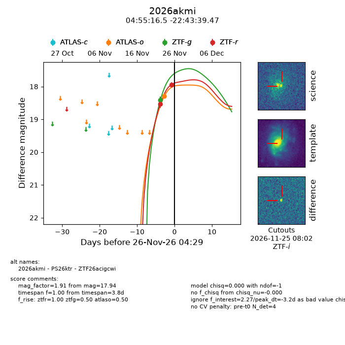
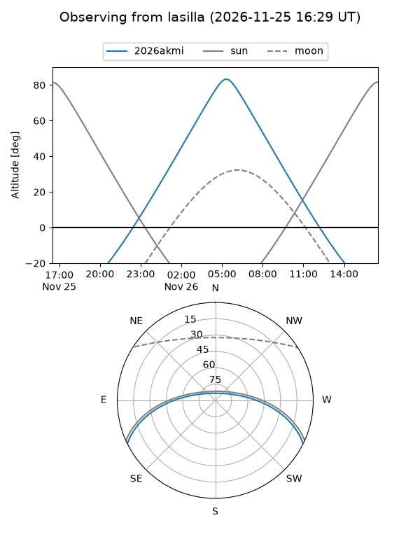
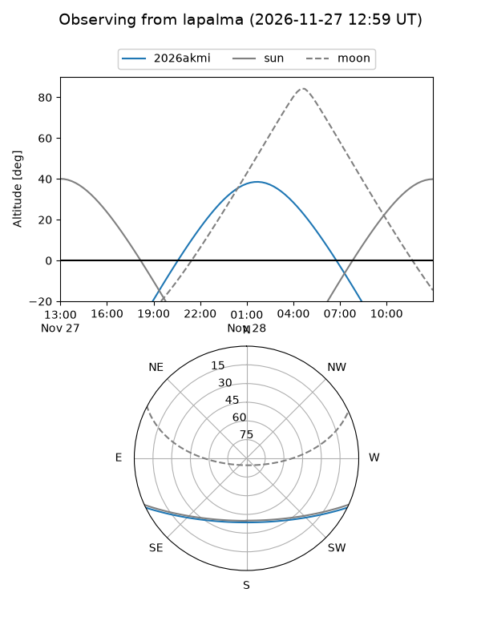
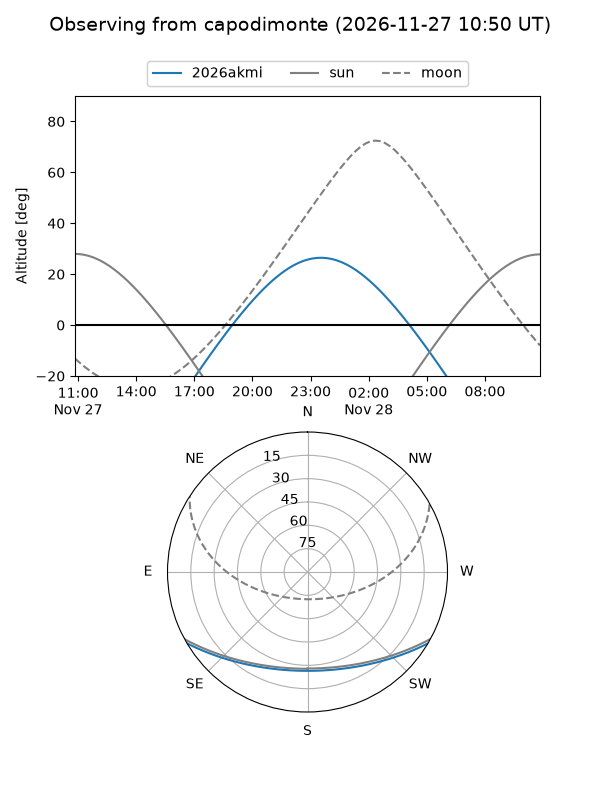
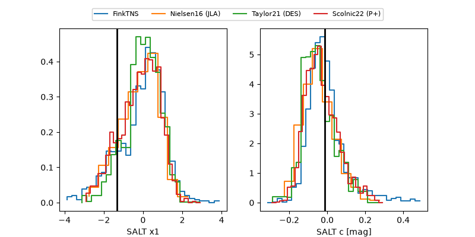

2026akmi
Target 2026akmi at 2026-11-26 04:31
Aliases and brokers:
FINK-ZTF: ztf.fink-portal.org/ZTF26acigcwi
Lasair-ZTF: lasair-ztf.lsst.ac.uk/objects/ZTF26acigcwi
ALeRCE-ZTF: alerce.online/object/ZTF26acigcwi
YSE-PZ: ziggy.ucolick.org/yse/transient_detail/2026akmi
TNS name: wis-tns.org/object/2026akmi
Direct TNS query: direct search
alt names
ZTF26acigcwi (ztf,fink_ztf)
2026akmi (tns,yse)
PS26ktr (panstarrs)
Coordinates:
equatorial (ra, dec) = 73.8186,-22.72763
equatorial (HMS+DMS) = 04:55:16.46,-22:43:39.47
galactic (l, b) = (222.7594,-35.07538)
Flags:
peak dt: -3.2
Photometry:
last atlaso=18.30, ztfg=18.41, ztfr=17.94
1 atlaso, 1 ztfg, 2 ztfr detections
Lightcurve

Visibility



Additional plots
